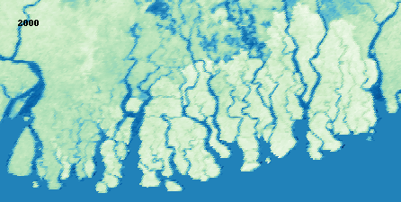

Sundarban Shifts Project
Introduction
The “Sundarban Shifts” project is focused on monitoring vegetation alterations in the Sundarbans Mangroves, which span across Bangladesh and India. Utilizing the MOD13A2 dataset from MODIS, the endeavor aims to unravel the ecological dynamics in light of climate change, rising sea levels, and human activities. The analysis revolves around the Normalized Difference Vegetation Index (NDVI) to assess vegetation health over time. Leveraging Python libraries for data visualization, the project manifests an interactive geographical portrayal of NDVI variations, encapsulating the essence of this distinctive ecosystem and the urgency of informed conservation strategies.
Data Citation
The project employs data from the MODIS MOD13A2 dataset, credited to Kamel Didan - University of Arizona, Alfredo Huete - University of Technology Sydney and MODAPS SIPS - NASA (2015). The dataset provides NDVI values at 16-day intervals, which are aggregated annually for this analysis to discern vegetation health and changes over the years in the Sundarbans http://doi.org/10.5067/MODIS/MOD13A2.006.
Libraries and Tools
Essential libraries and tools utilized in this project include:
rasterio: For reading and writing geospatial data.ee: Google Earth Engine library for geospatial analysis.numpy: For numerical operations.pandas: For data manipulation and analysis.matplotlib: For data visualization.PIL: Python Imaging Library for opening, manipulating, and saving image files.imageio: For reading and writing image data.osgeo: A set of python bindings for GDAL/OGR library.IPython.display: For displaying images.
Workflow
- Library Loading:
- Install
rasterioand import the required libraries for script execution.
- Install
- Authenticate Earth Engine:
- Authenticate and initialize Google Earth Engine to access geospatial datasets.
- Calculate Yearly NDVI Values:
- Define the region of interest as Sundarbans Mangroves.
- Create a function to fetch MODIS NDVI data for a specific year.
- Iterate through the years to calculate the mean NDVI for each year, exporting the results to TIFF images.
- Display a Few of The Plots:
- Visualize a subset of the generated NDVI images for selected years using Matplotlib.
- Creating the GIF:
- Define a function to normalize array values.
- Iterate through each year to read the NDVI images, normalize and apply a custom colormap, and add a year label to each image.
- Create a GIF from the sequence of images to visualize the time-lapse of NDVI values.
- Labeling GIF:
Similar to the GIF creation step, but with added year labels to each image for better understanding of the time-lapse.

- Summary:
- The script provides a systematic approach to compute and visualize the trend of vegetation change over the Sundarbans Mangroves region across a span of 24 years. The resulting GIF offers an engaging way to understand the dynamics of vegetation in the region over the years.
This project encapsulates a meticulous workflow from data extraction to visualization, rendering an engaging narrative of vegetation dynamics in the Sundarbans Mangroves. Through well-structured steps, it delivers an insightful glimpse into the changing vegetation health, underscoring the importance of informed conservation strategies in this ecologically significant region.
Code:
The code for this project can be found in the GitHub repository and the Colab Notebook